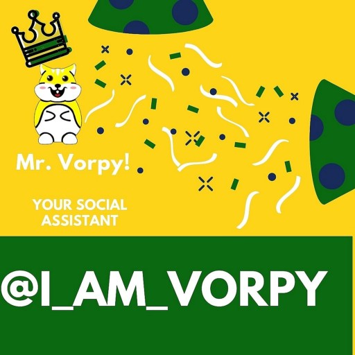

Blogs
The Coronavirus (COVID-19) has caused widespread health issues and destruction.
Now as so many people across the world are working from home, this has lead to people spending a humongous amount of time online surfing social media sites Read More....
So, you have a lot of friends on social media sites? You really like their attitude? Oh, you like their skills! Interesting! Read More....
Effects of Video Streaming Apps
There are several video streaming mobile apps available on the market today with features like lip-sync or acting to songs. These apps have have millions of users all over the world, mostly the youth. Read More....

Initially, people took to social media to meet people with similar mindsets and interests. They wanted to meet people of the same intellect level and interact with them. People follow social influencers and their actions are influenced in more ways than one. Read More....
